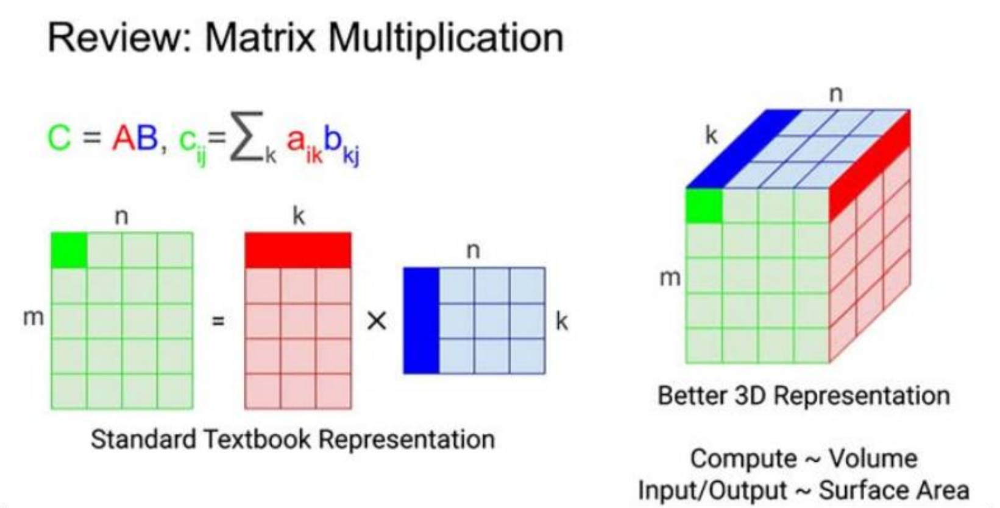
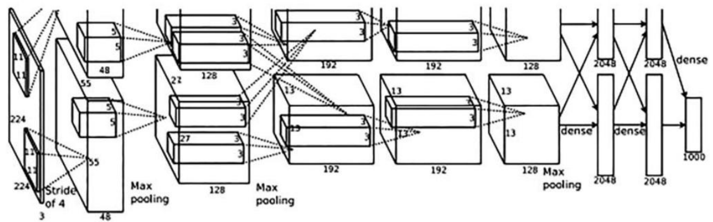
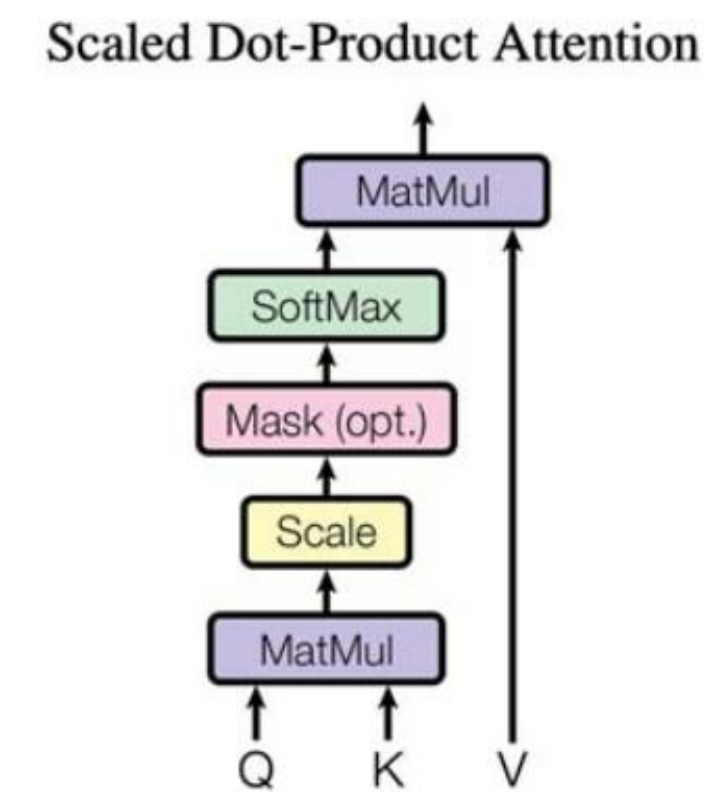

案例研究与习题（Cliff Young）
案例研究 1：矩阵乘法
本案例研究涉及的概念
- 矩阵乘法运算的结构
读者可能在中学代数里就接触过矩阵乘法。它是当前这场深度学习革命中最基本的计算密集型运算。矩阵乘法和标量乘法一样，有两个输入、一个输出，不同的是三个操作数都是二维矩阵。矩阵的形状通常先说行数、再说列数，例如 3 × 5 矩阵有 3 行 5 列，共 15 个元素。
两个矩阵相乘，形状必须匹配。按照 FORTRAN 的习惯，矩阵乘法通常写成 C = AB，其中 C 是结果矩阵，A 和 B 是源矩阵。C 是 m × n 矩阵，A 和 B 分别是 m × k 矩阵和 k × n 矩阵。需要注意的关键一点是：矩阵乘法运算的几何形状完全由 m、k、n 这三个标量决定。按上面对形状的描述，C 和 A 的行数相同，都是 m；C 和 B 的列数相同，都是 n；A 的列数必须等于 B 的行数。
这么多字母放在一起，不容易理清。可以把一次矩阵乘法想象成一个长方体，它的三个面分别是矩阵 A、B、C（图 7.33），三个标量决定了长方体各条棱的长度，矩阵乘法的工作量就对应长方体的体积。设想输入矩阵中的每个值都沿着垂直于所在面的方向，在长方体中传播开来。A 的值和 B 的值在哪里相遇，就在哪里把它们相乘。那么怎样构造输出 C 呢？对输出中的每个位置，取垂直于长方体 C 面、穿过该位置的那条线上的所有乘积，把它们加起来，就得到 C 中这个位置的值。

下面是一个非常简单的矩阵乘法程序，这种程序有时称为 GEMM（GEneral Matrix Multiplication，通用矩阵乘法）。GEMM 是基本线性代数子程序库（BLAS，Basic Linear Algebra Subroutines，读作「blahs」）中的一个程序，BLAS 是线性代数的一个标准库。
const int M, N, K;
float a[M][K], b[K][N], c[M][K];
void GEMM(const float &a[M][], const float &b[K][], float &c[M][]) {
for (int i = 0; i < M; ++i)
for (int j = 0; j < N; ++j)
for (int k = 0; k < K; ++k)
c[i][j] += a[i][k] * b[k][j];
}7.1 [10/20/10/10/20] <7.3, 7.4>
a. [10] 假设 M、N、K 都相等。这个算法的渐近时间复杂度是多少？（如果不熟悉大 O 记号，就用 M、N、K 写出加法和乘法次数的公式。）各参数的渐近空间复杂度是多少？当 M、N、K 增大时，这对矩阵乘法的运算强度意味着什么？
b. [20] 假设 M = 3、N = 4、K = 5，这样各维的大小两两互素。写出矩阵 A、B、C 中各存储位置的访问顺序（可以先写二维下标，再把它们换算成存储地址，或者相对于各矩阵起始位置的偏移量）。哪些矩阵的元素是顺序访问的？哪些不是？假定存储顺序是行优先（C 语言的方式）。
c. [10] 假设把 B 的行和列互换，构造一个新矩阵 BT（表示 B 的转置），即改为 B[N][K]。于是循环最内层的语句变成：
现在哪些矩阵的元素是顺序访问的？
矩阵乘法的内层循环体
称为乘累加运算，简称 MAC（multiply-accumulate）。可以把它写成一个短小的子程序：
按高性能计算界的惯例，一次 MAC 算作两次运算（大概是指一次乘法和一次加法）。即使指令系统把 MAC 规定为一条操作码，也照此计算。IBM POWER 就是这样，它的 MAC 指令需要三个源操作数。可以改用 MAC 重写矩阵乘法：
void GEMM_MAC(const float &a[M][], const float &b[K][], float &c[M][]) {
for (int i = 0; i < M; ++i)
for (int j = 0; j < N; ++j)
for (int k = 0; k < K; ++k)
MAC(c[i][j], a[i][k], b[k][j]);
}d. [10] 对于上面 M = 3、N = 4、K = 5 的情形，这个程序执行多少次 MAC？合多少次运算？
e. [20] 假设有一个硬件部件，每个周期能完成两个 100 × 100 矩阵的乘法。如果它的工作频率是 1 GHz，每秒能完成多少次 MAC？合每秒多少次运算？
分解
为了引出矩阵乘法的下一种写法，我们先改写 GEMM_MAC，让它的 B 参数改为转置后的矩阵，即值不变、行和列互换的 B。B 是 K × N 矩阵，所以它的转置 BT 是 N × K 矩阵。
void GEMM_MAC_BT(const float &a[M][], const float &b_t[N][], float &c[M][]) {
for (int i = 0; i < M; ++i)
for (int j = 0; j < N; ++j)
for (int k = 0; k < K; ++k)
MAC(c[i][j], a[i][k], b_t[j][k]);这样转置还有一个好处：A 和 B 两个矩阵在内存中的低维（变化最快的那一维）现在都是 k。
点积（内积）
先看点积运算。dot 接收两个向量，把对应位置的元素两两相乘，再把这些乘积加起来，返回总和。
float dot(const float &x[], const float &y[], int len) {
float sum = 0.;
for (int i = 0; i < len; ++i)
sum += x[i] * y[i];
return sum;
}
void GEMM_dot(const float &a[M][], const float &b_t[N][], float &c[M][]) {
for (int i = 0; i < M; ++i)
for (int j = 0; j < N; ++j)
c[i][j] = dot(a[i], b_t[j], K);
}7.2 [25/25/25] <7.3, 7.4>
a. [25] 改写 GEMM_MAC_BT 程序，在循环嵌套中不用 MAC，改用点积。dot 程序要调用多少次？
b. [25] 假设没有带 len 参数的软件版 dot，只有一个硬件版本，它要求 len 是固定长度，比如 2。改写你的代码，改用这样的 dot2 程序。dot2 要调用多少次？如果 K 不是偶数，应该怎么办？
SAXPY
另一种稍有不同的分解方式使用 SAXPY（Single-precision Alpha times X Plus Y，单精度 α 乘 X 加 Y）。SAXPY 接收一个输入向量和一个标量，用这个标量去乘输入向量的每个元素，再把各个乘积加到输出向量的对应位置上。
void saxpy(float alpha, const float &x[], float &y[], int len) {
for (int i = 0; i < len; ++i)
y[i] += alpha * x[i];
}c. [25] 改写 GEMM 程序，在循环嵌套中不用 MAC，改用 saxpy。
外积
两个向量的外积是一个矩阵，由两个向量之间所有可能的两两乘积组成。按惯例，结果矩阵和 GEMM 程序中一样，既作输入又作输出，外积加到传进来的矩阵上。还要注意，这个程序在 C 语言下标上用了一点小技巧：把 result 作为裸指针传进来，再手工计算 result 的下标。
void outer_product(const float &x[], const float &y[], int len_x, int len_y, float *result) {
for (int i = 0; i < len_x; ++i)
for (int j = 0; j < len_y; ++j)
result[i * len_y + j] += x[i] * y[j];
}7.3 [25/25] <7.3, 7.4>
a. [25] 改写 GEMM 程序，在循环嵌套中不用 MAC，改用 outer_product。示例中具体的下标写法无关紧要，你可以随意改写 outer_product 程序，使它适合你选定的接口。
b. [25] 重画图 7.33，表示出怎样把长方体分解成点积、SAXPY 和外积运算。可以把长方体中的小立方块稍稍分开画，以显示它们怎样组合成这三种运算。
案例研究 2：神经网络的层
本案例研究涉及的概念
- 深度神经网络（DNN）的结构
图 7.34 复制自经典的 AlexNet 论文（Krizhevsky，2012）中的图 2。这篇论文发表于 2012 年，但现代神经网络设计仍在使用的部件，这篇论文几乎都已经具备。

这张图需要解释一下。为了便于阅读，我们把它拆开逐部分来看，并且只讲基本内容。
- 图中的长方体（左边和中间）和长方形（右边）表示激活值（也称特征图）。激活值有时是三维结构（AlexNet 的输入是一幅 224×224 的 RGB（×3）图像），有时只是一维结构（右边的 5 个长方形是长度为 2048 或 1000 的一维向量）。最后一个激活值向量有 1000 个值，它是 AlexNet 的「输出分类器」，列出输入图像属于 ILSVRC 竞赛 1000 个类别中每一类的概率。
- AlexNet 的层和权重没有直接画出来。它们位于图中画出的相邻两组激活值之间，形状可以从激活值的形状推导出来，下面就会讲到。
- 前 5 层位于长方体之间，是卷积层。在卷积层中，输出长方体里的每一个点都取决于一个感受野（每个大长方体里面的小长方体）。每组卷积输入或输出下方的数字（3、48、128、192、192 和 128）是该层的深度，也称特征深度。输入激活值的深度是 RGB 三个通道，后面每一层的深度更大，表示的概念也更抽象。长方体上还标出了空间尺寸：输入是 224×224，第 1 层之后迅速降到 55×55，第 2 层之后是 22×22，第 3 层和第 4 层之后是 13×13。
- 在前几层中，有两种机制缩小空间尺寸（空间尺寸有点像图像的分辨率）。一种是步长：每隔 4 个像素才计算一次感受野，而不是在每个像素位置都计算。另一种是最大池化：取空间上 2×2 的一组激活值，返回其中的最大值。
- 最后 3 层是全连接层，基本上就是矩阵—向量乘法。第 6 层把 13×13×128 展平成一维向量，共两组，每组 21632 个激活值（合计 43264 个），再做一次矩阵乘法，把它们投影到 4096 个激活值。第 7 层从 4096 个激活值变换到 4096 个激活值。分类器层再从 4096 投影到最终的 1000 个输出类别。
- 在分类器层，SoftMax 函数把由 1000 个元素组成的激活值向量变换成 1000 个概率。SoftMax 是一个向量函数，公式为 \(v_i = e^{z_i} \big/ \sum_{j=1}^{K} e^{x_j}\)，其中输入向量的 K 个元素是 \(x_i\)，输出向量的 K 个元素是 \(v_i\)。这个公式不必让人望而生畏：每个输出的分母都相同，它只是一个缩放因子，保证输出向量中各值之和为 1。
- 图中还表示出网络怎样在两个 GPU 上并行执行，两个 GPU 之间只有有限的通信。并行化的问题后面还会讲到。
7.4 [10/20/15//25/25/25/25] <7.3, 7.4>
a. [10] 每个卷积层有多少个权重？产生一个输出激活值要用到多少个权重？
b. [20] 根据图注给出的总数（第 1 个卷积层的输出是 253,440，依此类推），推导出各卷积层的神经元（激活值）数。
c. [15] AlexNet 的第 6、7、8 层开始时，数据分在两个 GPU 上。为完成这些计算，每个 GPU 必须向另一个 GPU 发送多少数据？这几层在每个 GPU 上驻留多少个权重？对一幅图像，这几层要执行多少次运算？
d. [25] 深度学习实践中有一个令人遗憾的现实：我们学过的卷积数学公式很简洁，但在实践中并不总能完全对得上。缩小空间尺寸的层（卷积核步长和最大池化）就会出现这种情况。按理说，长度为 k 的滤波器在长度为 x 的输入上做卷积，应该产生 x − k + 1 个输出；但有时神经网络某一层规定的输出个数，似乎比这个预期值多。通常的解决办法是在输入中补上一定量的「零填充」，加大输入的有效尺寸，从而得到所需的输出尺寸。对图中的步长层和最大池化层，什么情况下需要在 X 方向或 Y 方向加填充，才能让数目对得上？注意，最大池化可能也需要有步长。
e. [25] SoftMax 函数的公式看上去复杂，但用几个很小的例子算一算，就能建立直观的认识。SoftMax 的输入称为 logits。计算下列输入的 SoftMax：
- 4 个值都等于 2.0 的向量；
- 向量 [1,2,3,4]；
- 长度为 4 的独热（one-hot）向量；
- 有两个大值、两个小值的四维向量。
然后试一试：把整个向量放大或缩小，给整个向量的每个元素加上同一个值，改变向量中各元素的相对大小。定性地说，SoftMax 对输入有什么影响？输出向量的值主要集中在哪里？
f. [25] 分别用均匀分布、高斯分布和指数分布生成一些长度为 1000 的随机向量，计算它们的 SoftMax，画出这些输出的累积分布函数（CDF）。CDF 的 50%、95% 和 99% 分别由多少个输入构成？
g. [25] SoftMax 在数值上可能不稳定。原因是计算中用到的指数函数增长很快，即使输入不算大，结果也可能超出浮点数的表示范围。怎样改写 SoftMax，才能消除这种数值不稳定性？
AlexNet 缺少的一个主要部件是注意力层。《Attention Is All You Need》（Vishwani，2017）一文提出了 Transformer 体系结构，注意力层在这篇论文中占有突出地位。用代数式表示，注意力的公式为
\[ \mathit{Attention}(Q, K, V) = \mathit{softmax}\left(\frac{QK^T}{\sqrt{d_k}}\right)V \]
图 7.35 用图形表示了注意力。

不过这样表示对我们来说有点过于简略，下面解释一下：
- 三个输入 Q、K、V 分别代表「查询」（Query）、「键」（Key）和「值」（Value）。这些名称提示我们，注意力的工作方式类似于内容寻址存储器（CAM）。CAM 是一种硬件结构，存储的是键—值对；访问 CAM 时给出的不是普通存储器那样的地址，而是一个查询，如果某个键等于查询，CAM 就返回这个键对应的值。CAM 做的是布尔型的精确比较和选择，注意力则「软」一些，因此学习过程中的反向传播能够穿过它。
- 首先，把 Q 看成一个向量，而不是矩阵。深度学习中有一件令人费解的事：一个激活值向量不一定具有人能理解的「含义」。研究人员用一种讲究的说法来表达这一点，说这个向量位于潜空间中。图中下方的 MatMul 表示 QKT，（暂时）可以看作矩阵—向量乘法，K 是矩阵，Q 是向量。现在把 K 看成一组向量，每个向量表示一个键，与查询向量处在同一个潜空间中。QKT 可以理解为计算 Q 与键集合中每个向量的点积。这里我们把点积当作比较函数来用：两个向量的方向大体相同时，它们的点积很大；如果方向正交，点积为零。所以，第一个 MatMul 只是把查询向量 Q 与键集合中的各个键作比较，算出 Q 与每个键的相似程度。
- 「缩放」和可选的「掩码」两步是逐元素运算，这里略过不讲。
- SoftMax 的作用前面已经讲过：它把 QKT 算出的 logits 变成一个概率分布，表示每个键—值对应分配多大的权重。
- 最后一个矩阵乘法 SoftMax(…)V 用 SoftMax 选出的权重去缩放各个值向量。所以，如果 SoftMax 的结果是独热的，这就像内容寻址存储器在说「命中的就是这一项」。如果 SoftMax 的结果中有多个非零值，它就把键与查询最接近的几项按接近程度成比例地混合起来。因此，第二个 MatMul 根据查询返回各个值的加权混合。
- 最后，去掉开头所做的简化，不再把 Q 看成一个向量，而是看成一组查询。这样，整个注意力模块并行地处理一整组查询，返回一组混合后的值，每个查询对应一个。
7.5 [25/15/15] <7.3, 7.4>
a. [25] 我们来探讨点积为什么像一个比较函数。同样为了简单，我们只用四维向量。显然，标准正交基向量组 {[1,0,0,0], [0,1,0,0], [0,0,1,0], [0,0,0,1]} 具有这样的性质：其中任意两个向量的点积都为零。但神经网络输出的向量很少这么干净，因为它们是通过随机过程学习得到的。随机选一个四维向量，然后自己构造一个包含这个向量的正交基。基中的 4 个向量不必是单位长度，但必须满足两两点积都为零。
b. [15] 如果一个键向量等于另一个键向量的 2 倍，会出现什么情况？它们的点积之比是多少？
c. [15] 类似地，如果一个键向量是另一个键向量的相反向量，会出现什么情况？它们的点积之比是多少？取负的那个在 SoftMax 中会怎样？
案例研究 3：数值表示
本案例研究涉及的概念
- 数值表示
- 浮点运算
矩阵乘法是当今神经网络中最关键的大规模运算。要在可以承受的芯片面积和功耗下达到每秒万亿次乃至千万亿次运算，必须降低精度。AlexNet 按 32 位浮点数编写，在 GPU 上运行；TPUv1 的运算次数之所以高，一部分原因就是它采用了 8 位定点运算。为了便于做习题，下面只讨论 4 位的数值表示，这样每种格式能表示的值都可以一一列举出来。
整数
无符号整数就是一个 n 位的位串，每一位的权值是对应的 2 的幂。把 4 个位从最高位到最低位依次记为 a、b、c、d，4 位无符号整数的值为：
\[ \textit{uint}4 = 8a + 4b + 2c + d \]
这 4 位能表示的整数范围是 0..15。
补码。 表示有符号整数时，二进制补码格式把最高位的权值看作 −8 而不是 8，公式为：
\[ \textit{int}4 = -8a + 4b + 2c + d \]
这时 4 位能表示的整数范围变为 −8..7。最高位也称为符号位。
Excess-k。 第三种格式用得较少，称为 Excess-k（偏移 k 码）。它的二进制表示与无符号整数的公式相同，只是多了一个「偏置」项 k，用来改变这些位的解释方式：
\[ \textit{excessk} = 8a + 4b + 2c + d + k \]
偏置项不一定在硬件中表示出来，也可以完全交给软件管理，由软件决定怎样解释这个值。无符号整数就相当于 excess-0 的值。
原码。 更少见的是用原码（sign-magnitude）表示整数：第一位表示符号，其余各位照常表示数值：
\[ \textit{signmag} = (-1)^{a} \cdot (4b + 2c + d) \]
4 位原码表示有一个有趣的性质：零有两种表示，相当于正零和负零。这给比较操作带来了麻烦：两个零的位模式不同，比较时却应当判为相等。
7.6 [5/10/10/10/20] <7.4, 7.5>
a. [5] 列出所有 4 位整数在无符号和有符号两种表示下的值。列成一张表即可，最好把各种表示写成二进制形式。
b. [10] 原码取负很容易，只要把符号位取反。对于有符号值（补码），x 与 −x 之间有没有共同的规律或公式？−8 不必考虑，因为它的相反数 8 无法用 4 位有符号数表示。
c. [10] 对每种格式，两个 4 位值相加，和需要多少位才能表示？
d. [10] 两个 4 位无符号值相乘，需要多少位才能精确表示无符号乘积？
e. [20] 假设要设计一个乘法器，接受两个 4 位输入，输入可以都是无符号数、都是有符号数，或者一个有符号一个无符号。为了在这三种情况下都得到正确的输出，需要做些什么？
浮点
读者在高中化学课上学过科学计数法。阿伏伽德罗常数（1 摩尔物质所含的原子或分子数）用科学计数法写出来，是 6.02 × 1023 这样的形式。浮点表示其实就是计算机上的科学计数法，只不过有效数字和指数用的不是十进制数，而是可以用位表示的整数。
浮点值由三部分组成：
- 一个符号位，与原码整数表示中的符号位一样。
- 0 个或多个尾数位（fraction bit），对应阿伏伽德罗常数中的「.02」部分。尾数位表示小数点右边的值，这里是二进制小数点，科学计数法中则是十进制小数点。整体来看，尾数位很像一个无符号整数。那么 6.02 中的 6 到哪里去了？这恰恰是浮点格式能高效表示实数的关键，下面还会进一步讨论。
- 0 个或多个指数位。指数位多数情况下以 excess-k 格式表示一个以 2 为底的指数，不过也可能有一些特殊值，用来处理这种格式的边界情况。
规格化数。 所谓规格化浮点数，它所表示的值由下式给出：
\[ (-1)^{\textit{sign}} \times 1.\textit{fraction} \times 2^{\textit{exponent}} \]
符号项只决定整个表达式的正负。注意，中间一项在尾数各位之前有一个「隐含的前导 1」。有了这个隐含的前导 1，中间一项表示的就是数轴上半开区间 [1.0, 2.0) 中的值。受尾数位格式所限，2.0 永远表示不出来；不过尾数位很多时（IEEE 双精度格式有 53 位），可以非常接近 2.0。隐含的前导 1 与指数项结合起来，使浮点格式具有极大的动态范围：指数每增加 1，在实数轴上覆盖的跨度就是原来的 2 倍。
零与次正规数。 读者可能会问：浮点格式怎样表示零？这要用到一个特殊的指数值，通常是全 0 的指数位模式。遇到这个特殊模式时，改用下面的公式：
\[ (-1)^{\textit{sign}} \times 0.\textit{fraction} \times 2^{\textit{minexp}} \]
其中 minexp 是最小的规格化浮点数的指数值。除此之外，唯一的变化是隐含的前导 1 变成了隐含的前导 0。尾数不为零时，这种格式的值称为次正规数（subnormal）或非规格化数（denormal）。次正规数对浮点数的数值稳定性和误差分析起着关键作用。
7.7 [20/20/20/5/10] <7.4, 7.5>
a. [20] 一种 4 位格式有 1 个符号位、1 个尾数位和 2 个指数位。列出全部 16 种 4 位取值在实数轴上各对应什么值。假设指数采用 excess-(−2) 格式，即指数为 0 表示次正规数范围，为 1 表示指数 −1，为 2 表示指数 0，为 3 表示指数 1。
b. [20] 在实数轴上画出这 16 个值（由于正负对称，只画正半轴或负半轴即可）。次正规数在数轴上起什么作用？
c. [20] 画出 1 个符号位、没有尾数位、3 个指数位的格式能表示的值。这些值是怎样分布的？对这种格式，乘法应当怎样实现？
d. [5] 画出 1 个符号位、3 个尾数位、没有指数位的格式能表示的值。这种格式看起来像什么？
e. [10] 1 个符号位、2 个尾数位、1 个指数位的格式又怎样？这时唯一的指数位起什么作用？这种格式与上一种有什么不同？
案例研究 4：速度、馈送与规模
本案例研究涉及的概念
- 一个简单神经网络模型的存储容量和计算速率（「速度与馈送」）
- 面向 DNN 的 DSA 的构造
论单位篇幅所含的系统设计智慧，最好的文章大概要数 Jon Bentley 的 The Back of the Envelope（「信封背面」）（Bentley，1999）。Bentley 在文中介绍了一种计算机系统设计风格：只用纸笔（或者真的就是一个旧信封的背面）和高中代数，快速检验一个设计是否合理，甚至是否可行。计算机体系结构设计者有时把这类分析称为「速度与馈送」（Speeds and Feeds）。本节给出若干这样的例子。
谷歌的第一代张量处理单元（TPU）有一个 256×256 的脉动阵列矩阵乘法器，峰值达到每秒 92 万亿次运算。这个数字在当时令人震惊：它是同时代双芯片 K80 GPU 的 30 倍，是同时代超大规模数据中心所用 CPU 的 90 倍。介绍 TPU 的论文（Jouppi，2017）还指出，存储带宽是 TPU 的关键瓶颈：TPU 只有两个 DDR3 存储通道，加载单字节权重的速率只有约 30 GB/s。
7.8 [10/10/10/10] <7.3, 7.4, 7.5>
a. [10] 假设脉动阵列的每个单元每个周期完成一次乘累加，一次乘累加算作两次运算，计算 TPU 的时钟频率。
b. [10] TPU 加载一个 64 KiB 权重的权重块（tile）需要多长时间？
c. [10] 运算强度（arithmetic intensity）定义为加载的一个值被重复使用的次数（通常是作为许多不同 ALU 运算的操作数）。在稳态运行时，权重的运算强度要达到多高，TPU 才能同时达到存储带宽峰值和每秒运算次数峰值？
后来的 TPUv4 lite 用两个 HBM 堆叠实现了 614 GB/s 的存储带宽（Jouppi，2021）。TPUv4 lite 实际有四个 128×128 的脉动阵列，但这里不考虑这一点，把计算资源看作一个整体的 256×256 脉动阵列。
d. [10] 权重采用 bf16 格式，每个权重 2 字节（TPUv1 每个权重只有 1 字节）。TPUv4 lite 加载 64 KiB 权重需要多长时间？要同时达到计算峰值和存储峰值，需要多高的运算强度？
根据 https://www.nvidia.com/en-us/data-center/h100/ 上的规格，最快版本的 H100 GPU（SXM 规格）峰值性能为：fp64 32 TFLOPS，fp32 367 TFLOPS，张量核上的 bf16 1979 TFLOPS，张量核上 fp8 或 int8 模式 3958 TFLOPS。据报道，H100 有 132 个流式多处理器（SM），时钟频率介于约 1 GHz 的基础频率和约 2 GHz 的加速频率之间。
另一种面向 DNN 的 DSA 是 Cerebras WSE-2，它堪称工程上的奇迹：用一整片晶圆构成一个计算单元，面积约相当于 50 个常规最大尺寸的晶片（单个晶片面积最大约 800 mm2）。WSE-2 的片上规格令人印象深刻：片上 SRAM 有 40 GB，带宽 20 PB/s，功耗 20 kW。这些庞大的资源通过 12 条 100 Gb 以太网链路与外界相连。
7.9 [10/10/10] <7.3, 7.4, 7.5>
a. [10] 考虑 fp32 的峰值 TFLOPS，这个值很可能是在 GPU 的峰值时钟频率下测得的。每个 SM 大约有多少个 fp32 功能部件？整个 H100 芯片大约有多少个？
b. [10] H100 张量核每秒的 bf16 运算次数高出这么多，你认为张量核功能部件与 SIMD 核功能部件的数量之比是多少？
c. [10] GPT-3 有 1750 亿个参数，即使每个权重只用 1 字节，一个 GPT-3 实例光参数就需要 175 GB。把这些参数从 WSE 之外的一个存储系统流式传送到晶圆上，需要多长时间？
习题
7.10 [5/5/10/10/10/10/15] <7.9>
2024 年，在云中租用一块 NVIDIA H100 GPU 每小时要 2～4 美元。据媒体报道，购买价格（CAPEX）约为 30,000 美元。OPEX 的一部分是电费：H100 的 TDP 为 700 W；2023 年美国的零售电价随地区不同，在每千瓦时 0.10～0.20 美元之间。
a. [5] 假设这块 GPU 一直在出租，H100 每年的租金收入是多少？
b. [5] 如果购买价格是云服务商为这块 H100 付出的唯一成本，需要多长时间才能收回购买成本？
c. [10] 这样一台机器运行 1 年，电费在最坏情况下是多少？
d. [10] 考虑电费后，回收期会怎样变化？还有哪些因素可能影响一块 GPU 在整个使用寿命内的总拥有成本？
e. [10] 假设这些其他因素带来的运营支出与电费相等，回收期现在是多少？
f. [10] 假设这块 GPU 的有效使用寿命约为 8 年，云服务商可能获利多少？如果每隔 2 年新一代 GPU 上市时，H100 的租金大约减半，利润会怎样变化？
g. [15] 前面忽略了影响 H100 出租盈利能力的一些实际问题。收入方面，我们假设硬件在多年中 100% 的时间都能租出去。更现实的比例可能是多少？H100 用于推理和用于训练时，这个比例会有什么不同？支出方面，我们漏掉了三项：容纳 H100 的 CPU 主机的 CAPEX 和 OPEX；出租这些 H100 的公司的人员成本；资金成本，即持有现金而不拿去投资的机会成本。估计这些因素对预期利润有什么影响。如果修正后的利润估计在经济上说不通，可能的合理解释是什么？
7.11 [10/10/10/10] <7.2>
第一台 Anton 分子动力学超级计算机通常模拟一个边长 64 埃的水盒子，计算机本身可以近似看作一个边长 1 米的盒子。一个模拟步代表 2.5 飞秒的模拟时间，需要约 10 微秒的挂钟时间。在分子动力学所用的物理模型中，系统中的每个粒子在每个（「外层」）时间步都要对所有其他粒子施加作用力，因此每一步都相当于在整台计算机上做一次全局同步。
a. [10] 计算从模拟空间到实际空间中硬件的空间放大系数。
b. [10] 计算从模拟时间到挂钟时间的时间减慢系数。
c. [10] 前两问的答案出乎意料地接近。这只是巧合，还是有某种别的极限在约束它们？（提示：光速既适用于被模拟的化学系统，也适用于执行模拟的硬件。）
d. [10] 在这些极限下，要用一台仓库级规模的超级计算机以 Anton 的速率做分子动力学模拟，需要什么条件？也就是说，一台边长 102 米或 103 米的机器，能达到的最短模拟步时间是多少？如果在遍布全球的云服务上做模拟，又会怎样？